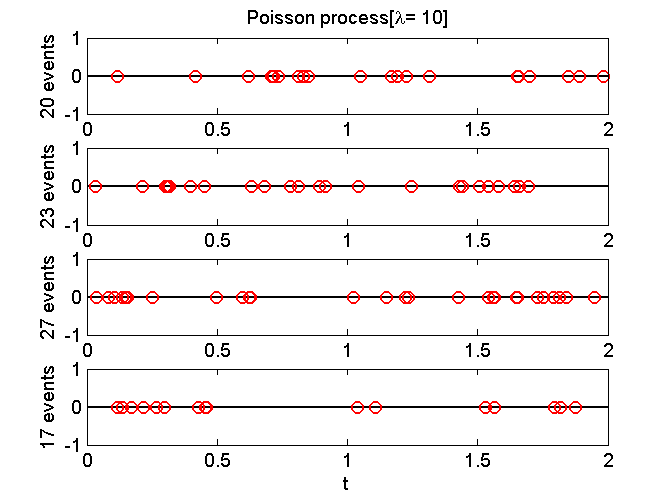

Contents
function demo_PoissonProcess()
demo_PoissonProcess: generate times of events in homogeneous Poisson process
Parameters for the simulation
lambda = 10;
M = 4;
tauMax = 20/lambda;
Simulate Poisson process
figure(1); clf
for m = 1:M
nEvent = 1;
tau(1) = -log(rand)/lambda;
while(tau(end) < tauMax)
nEvent = nEvent+1;
delay_event = -log(rand)/lambda;
tau(nEvent) = tau(nEvent-1) + delay_event;
end
tau = tau(tau < tauMax);
subplot(M,1,m);
plot([0 tauMax],[0 0],'k',tau,zeros(size(tau)),'ro')
ylabel(sprintf('%d events',length(tau)));
axis('tight')
end
subplot(M,1,1);
title(sprintf('Poisson process[%s= %g]','\lambda',lambda));
subplot(M,1,M);
xlabel('t')
